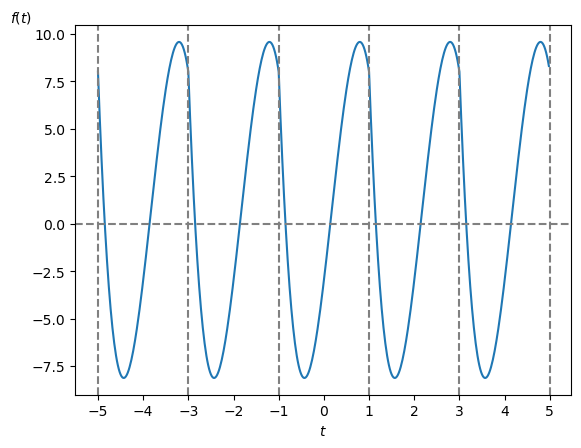
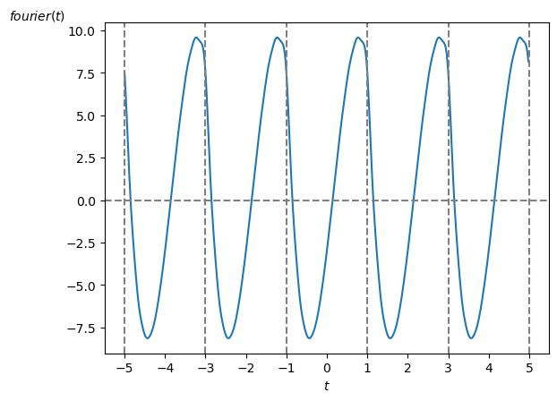

では具体例を示して視覚的にスペクトルを見てみましょう。
まず今回は周期性時間領域アナログ信号として周期 $\textrm{T}=2$ の
\[ f(t) = t^4 -20 \cdot t^3 + 10 \cdot t^2 + 20 \cdot t -3\ ,\ (-1 \leq t \leq 1 ) \]を考えます(図1)。

この $f(t)$ から求めた振幅・位相スペクトルは以下の様になります。
前ページで説明したように振幅・位相スペクトルは $w = k\cdot w_1$ [rad/秒] の所にだけ値があるディジタル信号になります。
なお今回はグラフの横軸を角周波数 $w$ [rad/秒] としていますが、横軸を周波数 $f$ [Hz] にしたり波長 [m] にする場合も実際には多いです。

なお複素フーリエ係数 $\textrm{C}[k]$ は共役関係にありましたので、$|\textrm{F}(w)|$ は偶関数、 $\angle \ \textrm{F}(w)$ は奇関数になります。
従って $ w \geq 0$ [rad/秒] 以上の領域だけをスペクトルで示すことも多いです。
さてフーリエ級数展開を使って復元した信号は次の様になります。
当然ですが元の信号の波形に復元されます。

参考までに、上のグラフを描画したプログラムはこちらです。